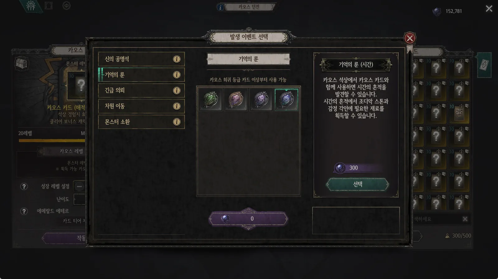
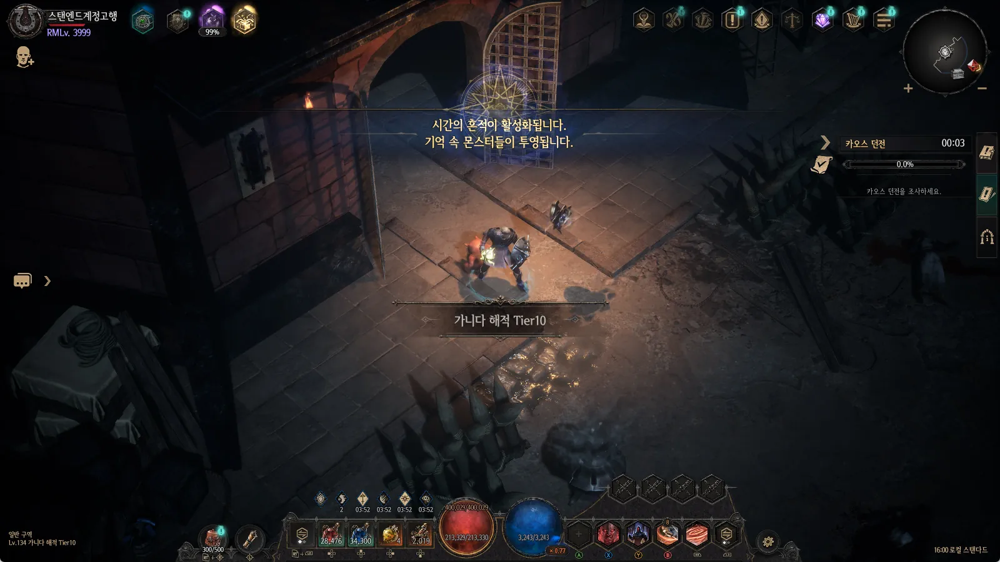
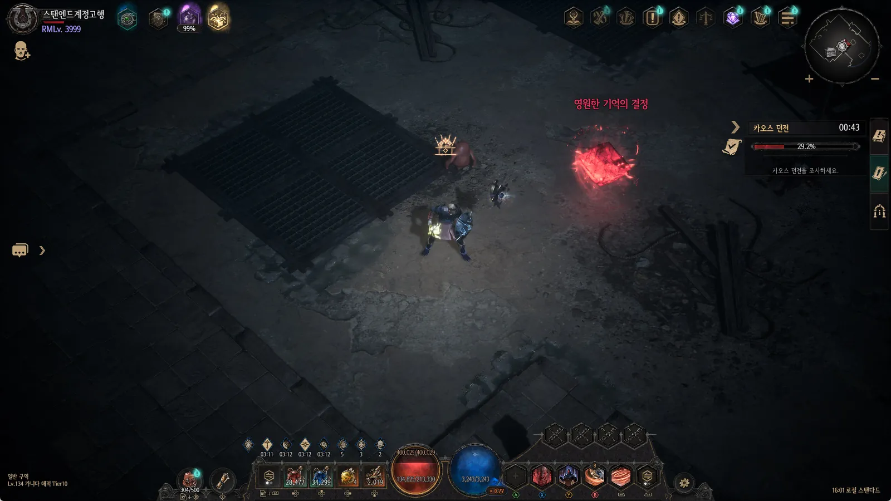
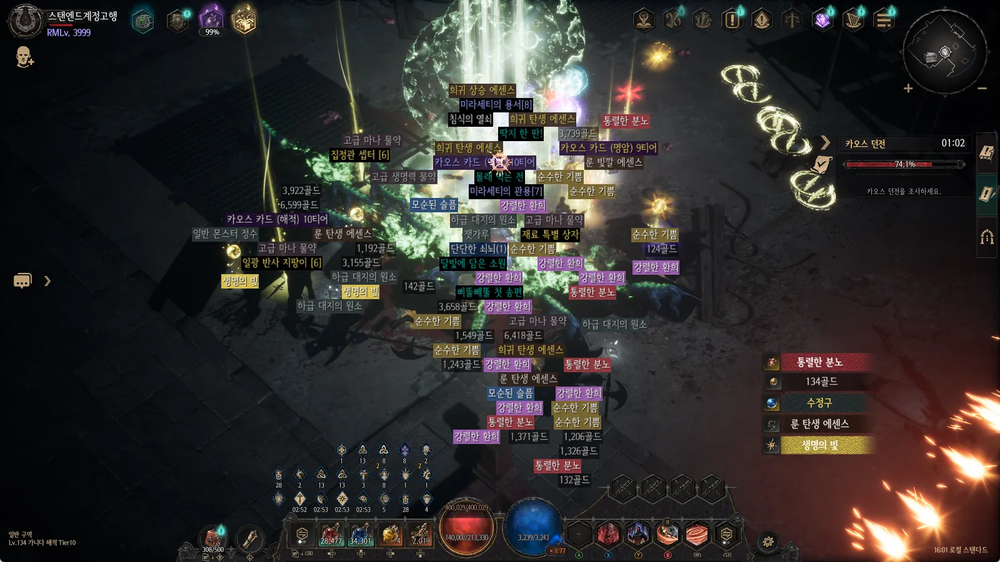
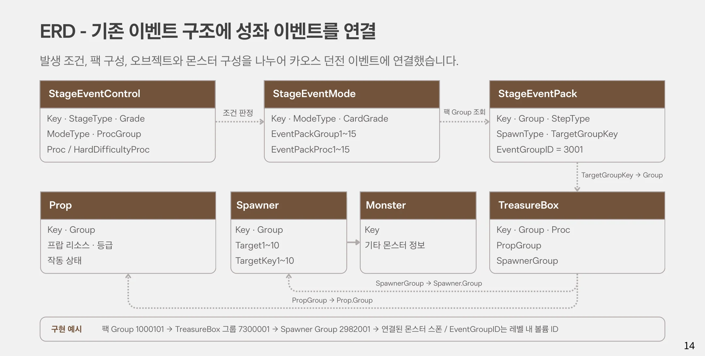

시간의 성좌 통폐합
성장 보상의 역할은 유지하면서, 일반 아이템 파밍과 분리되어 있던 플레이 동선을 카오스 던전으로 통합한 라이브 개편
시즌마다 따로 반복하던 성장 파밍
카오스 던전 파밍에 더해, 조디악 스톤(장비류)을 위한 별도 콘텐츠에도 시간을 써야 했습니다.
일반 아이템 드랍이 없는 '시간의 성좌'를 조디악 스톤을 위해 별도로 진행해야 했습니다. 옵션과 감정 재료까지 매 시즌 초기화되어, 이용자의 개편 요구가 오래전부터 이어졌습니다.
감정·조디악 스톤의 획득 경로를 카오스 던전 이벤트로 옮겼습니다. 시즌 초기화 정책은 유지하면서, 별도 콘텐츠를 반복하는 부담을 줄이고자 했습니다.
| 구분 | 개편 전 | 개편 후 |
|---|---|---|
| 진입 · 진행 | 전용 입장 재료 → 월드맵 · 단계 진행 | 카오스 던전 → 오브젝트 발견 · 전투 |
| 성장 보상 | 기존 시간의 성좌 콘텐츠에서 감정 · 조디악 스톤 획득 | 카오스 던전 파밍 중 함께 획득 |
| 유지 · 정리 | 전용 맵 · 퀘스트 · 재료와 성좌 몬스터 | 진행 구조 정리 / 몬스터 · 성장 보상 활용 |
성장 보상이 하던 역할은 그대로 두고, '어디서 얻는가'만 플레이어가 이미 머무는 동선 안으로 옮긴다.
원하는 이벤트를 확정하는 선택
자연 발생과 카오스 스톤을 통한 확정 발생을 함께 제공해, 목표에 맞게 참여하도록 구성했습니다.
카오스 던전 클리어 시 얻는 카오스 점수로 카오스 스톤을 사용하면, 시간의 성좌 이벤트를 확정적으로 발생시킬 수 있습니다. 파밍 중 우연히 만나는 재미와, 필요한 보상을 노리는 계획적인 플레이를 모두 열어 두었습니다.
구현은 새 시스템을 만들지 않고 기존 이벤트 확정 발생 구조(ChaosEventItemFunction)를 활용했습니다. 발생시킬 이벤트 이넘(ChaosEventType)을 추가해 시간의 성좌 이벤트와 연결했습니다.

던전 안에서 발견하고, 처치하고, 성장 보상을
던전에서 '기억의 결정'을 발견하고, 상호작용으로 등장한 몬스터를 처치해 감정·조디악 스톤을 획득합니다.
기억의 결정 발견
희귀 카오스 카드는 2~4개, 전설 카오스 카드는 3~5개의 오브젝트가 등장하도록 구성했습니다.
전투 후 성장 보상
오브젝트와 상호작용하면 몬스터가 등장하며, 처치 시 감정·조디악 스톤을 포함한 여러 아이템을 획득합니다.
기존 성좌 몬스터를 활용하고, 일부 보스의 기믹·페이즈 전환 연출은 필드 전투에 맞게 간소화했습니다.




기존 이벤트 구조에 성좌 이벤트를 연결
발생 조건, 팩 구성, 오브젝트와 몬스터 구성을 나누어 카오스 던전 이벤트에 연결했습니다.
구현 예시 — 팩 Group 1000101 → TreasureBox 그룹 7300001 → SpawnerGroup 2982001 → 연결된 몬스터 스폰. EventGroupID는 레벨 내 볼륨 ID를 참조합니다.

사용처 종료와 기존 획득 상태를 구분
라이브 개편의 핵심은 '이미 가진 것'을 어떻게 다루는가였습니다. 콘텐츠에 연결된 공급·사용처를 정리하고, 보유 아이템과 기존 기록의 처리 기준을 마련했습니다.
이미 획득한 기록은 유지하고, 아직 받지 못한 보상은 대상별 규칙으로 구분하여 검증한다.
| 처리 대상 | 변경 내용 | 설계 시 확인한 점 |
|---|---|---|
| 재료 공급 · 사용처 | 드랍 · 상점 공급 및 전용 기능 정리 | 퀘스트 · 연금술 · 경매장 연결까지 점검 |
| 기존 보유 아이템 | 판매가 · 아이템 설명 변경 후 후속 삭제 처리 | 인벤토리 · 보관함 · 연금술 슬롯 구분 |
| 시나리오 도감 | 해금 조건 변경 / 폐지 재료 보상 제거 | 미수령 보상 수령과 중복 수령 방지 |
| 업적 · 칭호 · 메달리온 | 기존 데이터 및 획득 기록 유지 | 신규 획득 조건과 미수령 상태 별도 처리 |
칭호 · 수령 가능한 상태
조건이 바뀌어도 획득 버튼이 활성화되어 수령 가능
메달리온 · 획득 전 상태
조건 변경 후 신규 획득 불가, 기존 획득 유저는 보유 유지
포트폴리오 원본 슬라이드
PDF 포트폴리오 10~15쪽 전체입니다. 클릭하면 전체 화면으로 보고 ← → 키로 넘길 수 있습니다.